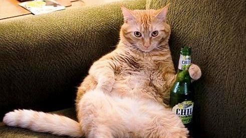

Pese a que en sus hábitos diarios ya incorporan el acicalamiento personal como medida de higiene, hay otra serie de aspectos que debes tener en cuenta que para que se sientan felices y cuidados. Vamos a repasar los principales puntos sobre cómo cuidar un gato:
Siempre de calidad y adaptada a sus etapas de vida. Los gatitos tienen necesidades nutricionales distintas a las de los gatos adultos, centradas en fomentar su correcto desarrollo y crecimiento, y además el número de sus tomas diarias suele ser más frecuente. A partir del año, el gato se considera adulto, y suele necesitar alimentos menos calóricos para evitar el posible sobrepeso, u otras variedades de producto que respondan a un nuevo estadio (ej. Esterilización). En ambos casos, gatitos y adultos, lo más recomendable es acostumbrarlos a combinar la alimentación seca con la húmeda (latas o sobres). La alimentación húmeda de calidad contiene un mayor porcentaje de agua (aproximadamente, un 80% que se traduce en un buen nivel de hidratación), y más proteínas magras. Además, la alimentación húmeda les aporta otros beneficios adicionales, como la variedad (múltiple combinación de ingredientes), y la estimulación de su curiosidad sensorial (recetas con texturas para todo tipo de paladares).

Limpia, en abundancia e idealmente servida en bebederos de acero inoxidable o aluminio. En verano, ubica varios bebederos de estas características en distintos lugares de tu casa, para que tu gato siempre tenga agua a mano si quiere beber.
Adquiere un arenero que se adapte bien a sus dimensiones, sobre todo cuando tu gato ya haya alcanzado su etapa adulta. Colócalo en un lugar tranquilo, alejado de la zona de alimentación, bebida y relax. Con ayuda de una pala retira sus deposiciones diarias, y cambia la arena con una frecuencia semanal. Cuando desarrolles esta tarea, procede a limpiar el arenero con algún producto desinfectante lo más neutro posible y nunca tóxico, para evitar que quede algún rastro que pueda incomodar a tu gato. Aprovecha estas labores para confirmar que el aspecto de las heces de tu gato no muestra ninguna alteración por la que debas preocuparte.
Acostúmbralo a limarse las uñas en un rascador desde que es gatito. Ésta es la mejor solución para que no recurra a hacerlo en sofás, cortinas y muebles. Añade a este aspecto la rutina del corte de uñas. Ciertamente, puede ser una labor compleja y estresante para tu gato y para ti, pero en tiendas especializadas en mascotas puedes adquirir tijeras seguras que impedirán que puedas dañar alguno de sus nervios. Si te ves muy apurado, aprovecha una de las visitas al veterinario para que te explique cómo llevar a cabo el corte de uñas en las condiciones más favorables para ambos. Pon especial atención en las almohadillas de las patas, sobre todo durante la temporada estival, en la que pueden verse expuestas a quemaduras debido al contacto con superficies excesivamente calientes.
Totalmente imprescindible si tienes un gato con pelo semi largo o largo. Busca aquel momento en el que lo intuyas más tranquilo y predispuesto al contacto contigo, y aprovecha para convertir la rutina del cepillado en una tarea habitual. En tiendas especializadas en mascotas puedes encontrar la mejor opción de cepillo para cubrir las características de tu gato, teniendo en cuenta que la finalidad es eliminar el exceso de pelo muerto y la consecuente formación de nudos o bolas de pelo en el estómago.
No olvides que los gatos, como ocurre con los perros, también necesitan tener su cartilla de vacunas en regla y pasar por los procesos de desparasitación (interna y externa). Los veterinarios suelen aprovechar estas visitas para realizarle una exploración completa a tu gato, inspeccionando sus oídos, estado de sus dientes, aparición de posibles masas, estado de la piel, pelo y ojos. Este aspecto, de carácter preventivo, ayudará a que tu gato goce de una salud extraordinaria, y te confirmará que está excelentemente bien cuidado.
No es necesario que le compres un super parque de juego. Con imaginación y algunos remedios caseros, puedes construirle elementos que lo incentiven a jugar e interactuar contigo, tales como pelotas de trapo, cajas de cartón con distintos niveles, o premiarle con juguetes tipo ratitas que despertarán sus instintos naturales de caza.